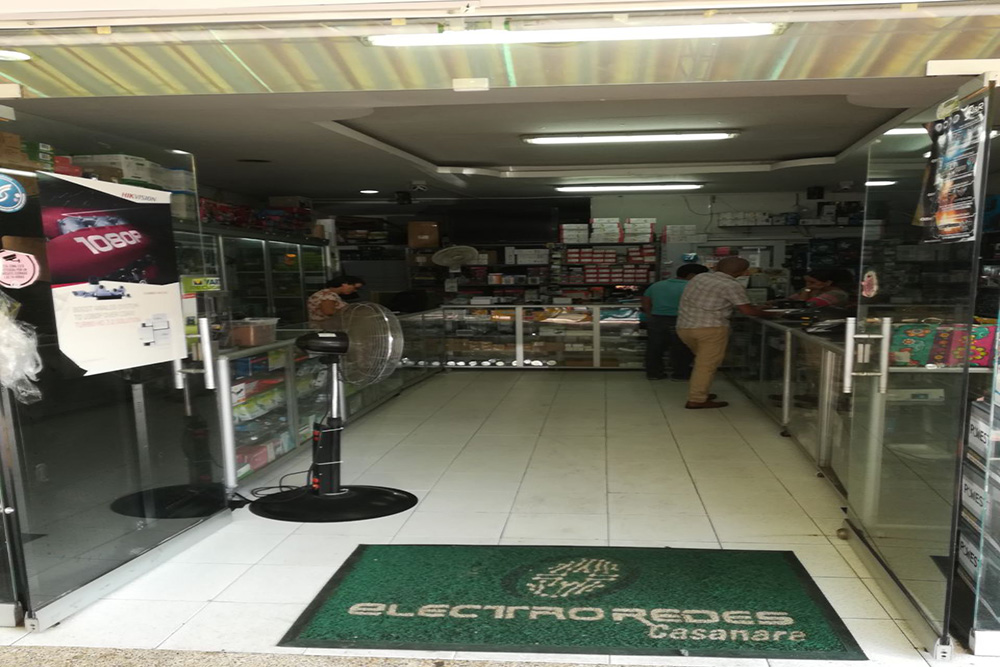

Quienes somos
Electroredes es una empresa constituida en el año 2007 en la ciudad de Yopal, dedicada a la distribucion de todo tipo de equipos y materiales de uso electrocnico de ultima tecnologia y de calidad reconocida. Brindamos a nuestros clientes soluciones, asesoría, soporte y mantenimiento de sus equipos de cómputo. Ofreciendo una gran variedad de productos y unos precios altamente competitivos a nivel nacional.
Misión
Garantizar el complemento ideal del cliente que busca satisfacer sus necesidades mediante productos, brindándole las mejores opciones en marcas, precios, calidad y desempeño para cada tipo de exigencia, ya sea básica de seguridad o empresarial.
Visión
Consolidarnos como la empresa líder en tecnología, que distribuyendo hardware de altísima calidad, provea innovación, servicio, garantía y excelentes precios, avanzando a la par con los desarrollos tecnológicos y aportándoles a nuestros clientes a nivel nacional las mejores soluciones informáticas.
Objetivo
Proveer todos los materiales necesarios para que funcione la oficina inteligente del Siglo XXI, capaz de abastecer el creciente mercado de las comunicaciones, proponiendo soluciones integrales para la interconexión de redes, ofreciendo productos con respaldo a nivel nacional e internacional.
